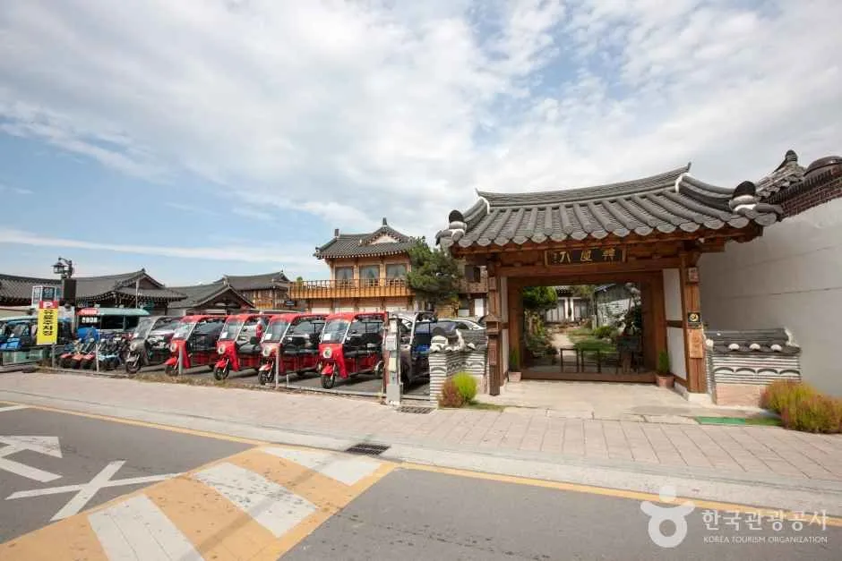
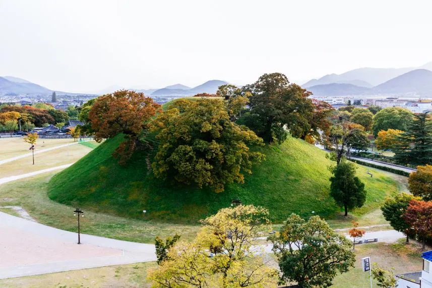
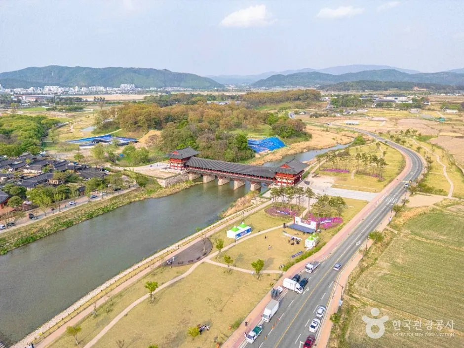
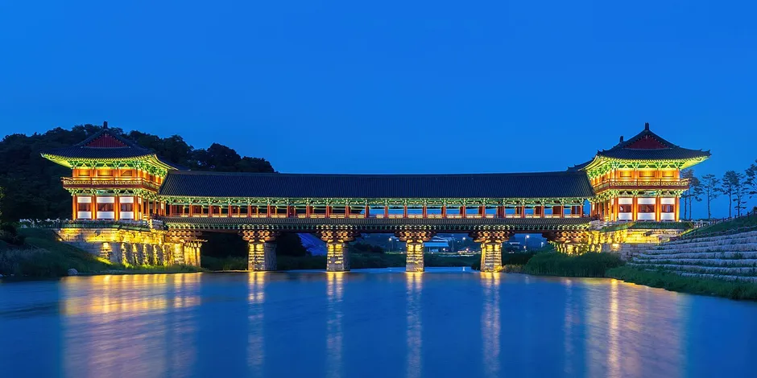
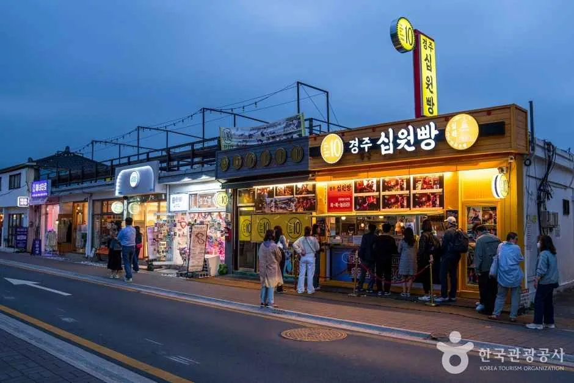
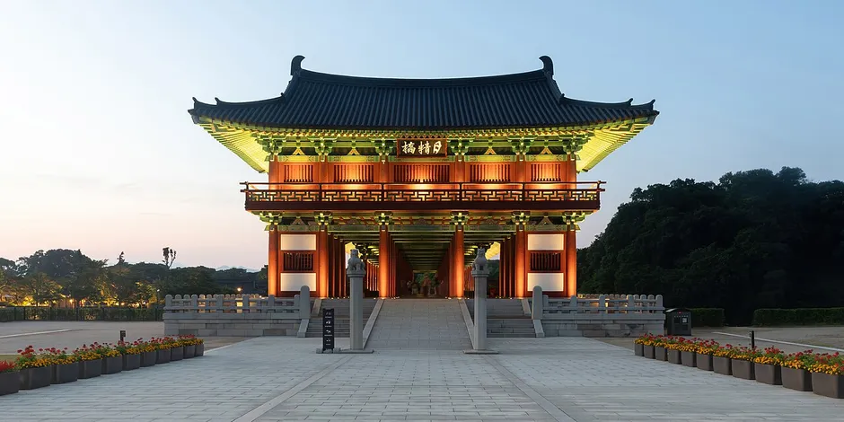
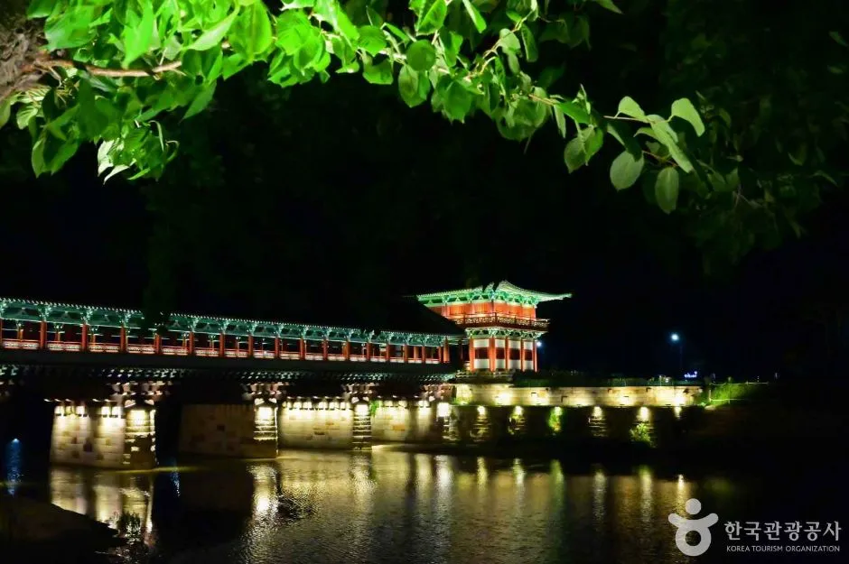
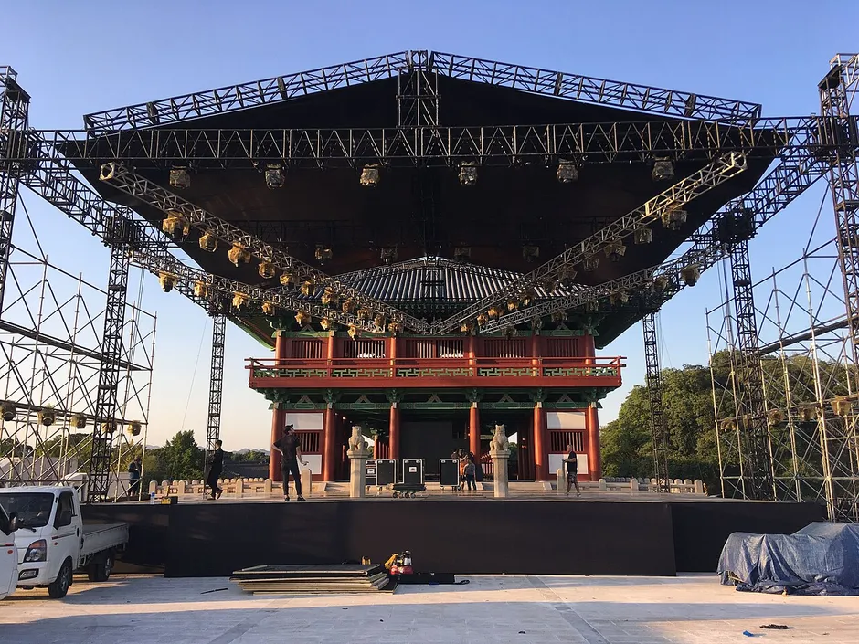
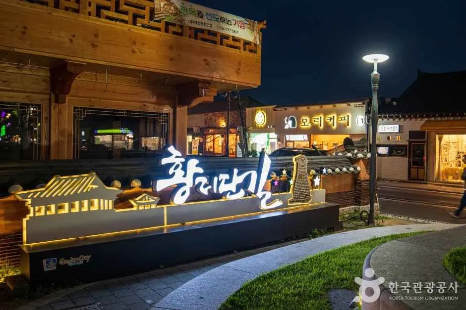
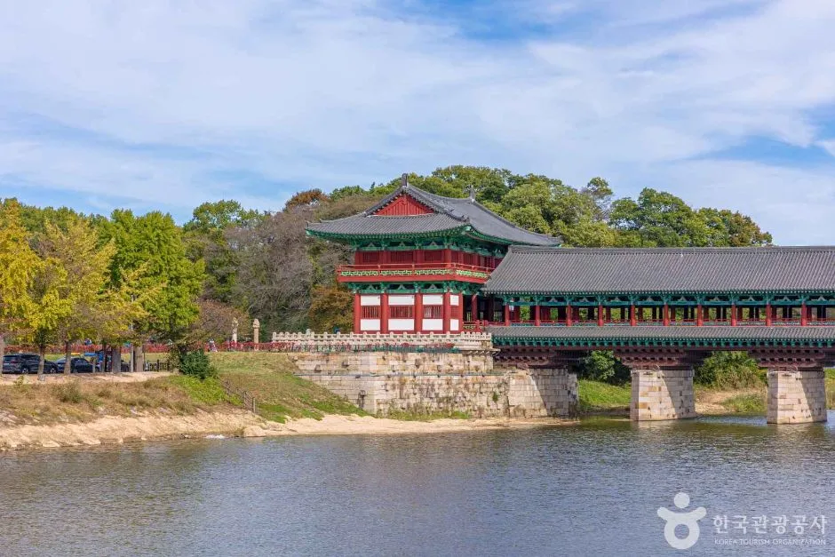

▲ 조명이 켜진 월정교의 밤 풍경(평소 야간 조명 사진으로, 축제 기간 촬영본이 아님) 사진=한국관광공사
한글날 연휴에 신라문화제를 보러 경주 도심에 차를 몰고 간다면, 지도보다 먼저 봐야 할 것은 '통제 시간표'다. 제53회 신라문화제는 2026년 10월 9일(금)부터 11일(일)까지 월정교와 봉황대 일원에서 열리고, 경주시는 월정교 공영주차장~박물관 네거리, 중앙로, 봉황로 청기와네거리~내남네거리 구간의 차량 통행을 시간대별로 제한한다고 밝혔다.
이 글은 경주시 보도자료 내용을 옮긴 언론 보도와 신라문화제 공식 누리집(행사일정표·행사장 지도·자주묻는 질문·찾아오시는 길, 9월 30일~10월 1일 게시분)을 바탕으로 프로그램 시간표, 교통통제 구간, 주차·대중교통, 밤 공연 뒤 귀가 동선을 정리했다. 임시주차장·셔틀버스·우회로는 기사 작성 시점(10월 1일)까지 확인된 공식 발표가 없어 '미발표'로 표기했고, 혼잡 예상은 모두 추정이다. 첨성대 야경만 따로 보려는 경우는 경주 첨성대 가을 야경 기사를, 평소 경주 도심 주차 요령은 경주 자차 여행 주차 전략 기사를 함께 보면 된다.
1. "어디서 몇 시에?" 프로그램 시간표를 운전자 눈으로 다시 보기
축제는 크게 월정교(밤 공연)와 봉황대·중앙로(낮~밤 거리 프로그램) 두 축으로 나뉜다. 운전 계획은 어느 축을 언제 갈지부터 정해야 하므로, 프로그램을 장소와 시간 중심으로 정리했다. 시간은 10월 1일 게시된 공식 일정표 이미지와 경주시 보도를 대조했다.
| 프로그램 | 일시 | 장소 | 비고 |
|---|---|---|---|
| 화백제전 '신라, 하나의 빛' | 10/9·10 저녁 7시, 약 40분 | 월정교 수상 특설무대 | 출연 약 100명. 미디어아트·프로젝션 맵핑·3D 플라잉 공중극·드론·불꽃 연출(경주시 보도, 공식 관람포인트 안내와 일치). 계단식 대형 수상 객석 대신 전석 스탠딩. 공식 포스터의 주제공연명은 '신라 빛의 탄생' |
| 실크로드페스타 | 10/9~11, 일정표 띠는 15:00~22:00 | 봉황대 일원 6개 무대 | 공연표상 가장 이른 공연은 10/9 14:00, 10/10 12:30, 10/11 14:00 무렵(공연 일정·장소는 변경될 수 있다고 명기). 거리예술 26개 팀 61회(보도 기준) |
| 화랑힙합페스타 | 10/10 17:00~21:00 | 내남네거리 특설무대 | 공식 포스터·일정표·보도가 모두 17:00~21:00. 다이나믹듀오·비오·우원재·키드밀리 등 |
| 달빛난장(야시장) | 10/9~11 (공식 15:00~22:00, 보도 13:00~자정) | 봉황대 광장·중앙로·금관총 발굴관 일원 | 보도 기준 36개소 부스·약 1,300석·다회용기 5만 개 이상(뷰티경제·겟뉴스 보도). 공식 지도엔 먹거리부스 A·B와 C·푸드트럭 표시, C는 QR 주문 |

▲ 낮의 황리단길 거리. 한옥 건물과 상점, 주차된 소형 차량이 보인다(평소 촬영본) 사진=한국관광공사
ℹ️ 달빛난장 운영 시간, 출처가 서로 다르다
신라문화제 공식 누리집 달빛난장 소개 페이지와 공식 일정표 이미지(10/9·10·11 모두)는 15:00~22:00, 장소 봉황대 광장이다. 반면 경주시 보도자료를 옮긴 언론 보도(뷰티경제·겟뉴스)는 매일 오후 1시부터 자정까지로 전한다. 공식 게시물이 더 구체적이고 최신이지만, 현장 운영 시간이 바뀌었는지는 확인하지 못했다. 밤늦게 귀가할 계획이라면 22시 종료와 자정 종료 중 짧은 쪽을 기준으로 짜는 편이 안전하다.
행사장 안에는 이 밖에도 아이 동반·휴식·야간 프로그램이 나뉘어 운영된다. 공식 '체험/휴식공간' 안내(10월 1일 게시)에서 확인되는 시간과 위치는 아래와 같다.
| 프로그램 | 시간 | 위치 | 메모 |
|---|---|---|---|
| 웰컴 키즈존 | 13:00~18:00 | 신라대종 앞(중앙로 위) | 도로 위 어린이 놀이터. 일부 체험은 1일 참여자 수가 한정 |
| 고마우체국 신라점 | 13:00~18:00 | 법장사 뒤 잔디밭 | 어린이 30명에게 그림과 같은 인형 선물. 편지지가 소진되면 일찍 종료 |
| ESG 러닝 스테이션(그린어스존 RE:RUN) | 13:00~18:00 | 서봉총 앞 | 러닝 클래스·러닝 미션 인증·친환경 급수대, 업사이클링 체험 |
| 빛의 숲(청년작가존) | 14:00~22:00 | 서봉총 앞 | 빛 조각이 흩어진 작은 숲에서 순서를 맞히는 체험. 완주자에게 초상화 족자(매일 선착순 50명, 시간은 매일 오전 인스타그램 @scf054 스토리 공지) |
| 조용한 영화관(라운지존) | 10/9·10/11 20:00 시작 | 내남네거리 잔디밭 | 개별 이어폰(블루투스) 지참. 10/9 '왕과 사는 남자', 10/11 '만약에 우리'. 10/10은 같은 장소에서 힙합페스타가 열려 상영 일정이 없음 |
| 봉황대 라이팅 퍼포먼스 | 10/9 21:40~21:45, 10/10 21:25~21:30, 10/11 21:30~21:35 | 봉황대 | 실크로드페스타 공연표 하단 표기. 보도의 '야간 고분 라이팅쇼'에 해당하는 것으로 보임(추정) |
| 지역예술인 버스킹 | 매시 정각 시작. 10/9 12시~, 10/10 11시~, 10/11 12시~ | 황리단길 안내소·교촌마을 소무대·첨성대 핑크뮬리 소무대 | 지역예술인 58개 팀 251명(보도). 편성은 변동 가능 |

▲ 봉황대 고분 일대(평소 사진, 축제 기간 촬영본이 아님) 사진=문화재청(공공누리 제1유형)
일정표와 행사장 지도는 공식 누리집에서 직접 확인할 수 있다. 행사 직전 변경이 있을 수 있으므로 출발 전 한 번 더 보는 것이 좋다. 공식 행사일정표 바로가기 봉황대 행사장 지도 바로가기 월정교 행사장 지도 바로가기
2. 교통통제 3개 구간 — 시간대가 전부 다르다
통제는 한 번에 걸리는 것이 아니라 구간마다 시작·종료 시각이 다르다. 경주시가 밝힌 세 구간은 공식 행사장 지도(봉황대·월정교)의 통제 표기와도 일치한다. 구체적인 우회로는 확인한 보도와 공식 게시물에 나오지 않아 미발표로 둔다. 일부 보도는 이 구간을 '전면 통제'로 표현했다.
| 구간 | 통제 시간 | 같이 알아둘 점 |
|---|---|---|
| 월정교 공영주차장 ~ 박물관 네거리 | 10/9·10 18:30~20:30 | 화백제전 시작(19:00) 30분 전부터. 공식 지도엔 '월정교공영주차장 ↔ 경주박물관 사거리'로 표기되고, 월정교 보행구간도 같은 시간 통제. 현장 상황에 따라 시간이 달라질 수 있어 안전요원 안내를 따르라고 명시 |
| 중앙로 | 10/8 12:00 ~ 10/12 12:00 | 공식 지도엔 '목 12:00 ~ 월 12:00'로 표기. 축제 전날 낮부터 통제 시작, 4일간 유지. 달빛난장·키즈존이 있는 거리 |
| 봉황로 청기와네거리 ~ 내남네거리 | 10/9 09:00 ~ 10/11 22:00 | 공식 지도엔 '금 09:00 ~ 일 22:00'로 표기. 축제 3일간 낮 시간 포함 계속 통제. 힙합페스타 장소(내남네거리) 포함 |
✅ 통제 시간표에서 읽히는 운전 포인트
· 중앙로는 8일 낮부터 막힌다 — 연휴 직전 평일에 도심을 지나는 차량도 우회가 필요(추정)
· 봉황로는 사흘 내내 낮에도 통제라 황리단길·대릉원 방면 이동 경로가 바뀔 수 있음(추정)
· 월정교 앞 통제는 18:30~20:30 두 시간 — 이 시간 안에 구간 안 주차장에서 차를 빼려는 계획은 피하기
· 차량 통제 정보는 내비게이션·시청 SNS로 안내한다고 보도됨. 시작 직전 변경 가능

▲ 월정교 일대를 내려다본 모습. 주변 도로가 이어진 모습(축제와 무관한 평소 사진) 사진=한국관광공사
그렇다면 10월 1일 시점에 무엇이 확정이고 무엇이 비어 있을까. 공식 누리집과 보도를 항목별로 대조했다.
| 항목 | 상태 | 근거·메모 |
|---|---|---|
| 차량 통제 3개 구간·시간 | 발표됨 | 경주시 보도, 공식 행사장 지도 |
| 우회로 | 미발표 | 보도는 홈페이지·SNS·현수막·내비게이션 연계 안내를 '추진'한다고만 전함 |
| 임시주차장 | 미발표 | 공식 FAQ는 상설 공영주차장 5곳만 안내 |
| 셔틀버스 | 미발표 | 공식 '찾아오시는 길'은 시내버스·택시 정보만 게시 |
| 교통통제 공식 공지(게시판) | 미게시(확인 시점) | 공지사항 최신 글은 9월 30일 가이드북. FAQ엔 '확정되는 대로 안내'로 남아 있음. 작년(제52회)에는 10월 1일에 교통통제 안내 공지가 올라왔음 |
| 우천 시 변경 | 원칙만 안내 | 공연·체험이 개별적으로 장소·시간 변경될 수 있고 변경은 현장·공식 누리집 공지·인스타그램 @scf054로 공지. 강풍 기준은 별도 안내를 확인하지 못함 |
| 입장 제한 | 안내됨 | 화백제전은 별도 입장권이 없는 무료 공연이라 퇴장 시 재입장이 제한될 수 있고, 수용인원 초과 시 안전을 위해 입장이 제한될 수 있다(공식 월정교 지도) |

▲ 해 질 녘 조명이 켜진 월정교(2024년 촬영, 축제 기간 사진이 아님) ⓒ Basile Morin / CC BY-SA 4.0 (Wikimedia Commons)
3. 주차 — 공식 안내 주차장과 '미발표'를 구분하기
공식 FAQ가 안내하는 주차장은 공영주차장 5곳이고, 임시주차장은 발표를 찾지 못했다. 공식 안내는 "축제 기간 내 주차가 어려울 수 있으니 대중교통 이용을 권장하며, 별도 주차요금이 발생할 수 있다"고 덧붙였다. 월정교 공영주차장은 통제 구간(월정교 공영주차장~박물관 네거리)의 출발점이기도 해서, 화백제전 날 저녁에는 접근에 영향이 있을 수 있다(추정).
| 행사장 | 공식 안내 주차장(주소) | 상태·메모 |
|---|---|---|
| 월정교 | 월정교공영주차장(교동 153-5) | 18:30~20:30 통제 구간의 한쪽 끝(공식 지도). 만차 시간대는 확인 못 함 |
| 봉황대·중앙로 | 봉황대 공영주차장(노동동 12-1) | 운영 정보·이용요금은 경주시시설관리공단에서 확인(공식 안내) |
| 중심상가 공영주차장(원효로 121-1) | 통제 구간과의 접근 관계는 확인 못 함 | |
| 경주시 제1공영주차장(중앙로 47번길 13) | 주소가 중앙로 인근이라 통제 구간 영향을 받을 수 있음(추정) | |
| 쪽샘공영주차장(첨성로 97) | 봉황대 주변 안내 목록에 포함. 도로명상 첨성대 방면(추정) | |
| 임시주차장 | — | 미발표(확인 못 함) |
| 셔틀버스 | — | 미발표(확인 못 함) |
공영주차장 운영 정보와 요금은 경주시시설관리공단 누리집에서 확인할 수 있다. 경주시시설관리공단 바로가기

▲ 저녁 무렵 상점 불빛이 켜진 황리단길 거리(평소 촬영본) 사진=한국관광공사
도심 한가운데라 행사장 바로 앞 주차를 노리는 것보다 외곽에 대고 걸어 들어가는 쪽이 현실적일 가능성이 크다(추정). 공식 '찾아오시는 길'도 봉황대 일대가 혼잡할 수 있어 가급적 대중교통을 이용하라고 안내한다. 이 글에서는 특정 주차장을 추천하지 않으며, 임시주차장이 발표되면 그쪽이 우선이다.
4. 대중교통·KTX — 차를 두고 오는 선택지
KTX를 타고 온다면 지금 정식 명칭은 '경주역'이다. 2023년 12월 28일 '신경주역'에서 경주역으로 바뀌었는데, 신라문화제 공식 '찾아오시는 길'에는 여전히 '신경주역'으로 적혀 있다. 아래 소요 시간은 그 공식 안내(화백제전·월정교 기준)를 옮긴 것이며, 공식 문구도 "버스 운영 및 교통 상황에 따라 달라질 수 있다"고 밝힌다.
| 출발지 | 수단 | 하차·소요(공식 안내) |
|---|---|---|
| 경주역(공식 표기 '신경주역') | 버스 60·61번 | 첨성대 하차, 약 40분 |
| 택시 | 약 20분 | |
| 시외버스터미널·고속버스터미널 | 버스 600·150번 | 월성동행정복지센터 하차, 약 30분 |
| 버스 500·506번 | 탑리마을 하차, 약 30분 | |
| 택시 | 약 10분 |
하차 정류장에서 월정교까지의 도보 구간은 공식 안내에 없어 확인하지 못했다. 연휴 저녁에는 택시 호출이 몰릴 수 있다(추정).

▲ 해 질 녘 조명이 켜진 월정교 남쪽 누각 정면(2024년 촬영, 축제 기간 사진이 아님) ⓒ Basile Morin / CC BY-SA 4.0 (Wikimedia Commons)
| 상황 | 권장 방식 | 이유 |
|---|---|---|
| 화백제전(19:00)을 보고 싶다 | 이른 오후 도착 후 주차, 또는 대중교통 | 18:30부터 월정교 앞 통제, 공연 후 귀가 인파 집중(추정) |
| 낮 시간 거리공연·황리단길 중심 | 외곽 주차 + 도보 | 봉황로·중앙로 통제로 도심 진입 경로 제한 |
| 아이 동반(키즈존 13:00~18:00) | 낮에 도착해 한 번 주차 | 키즈존이 통제된 중앙로 위에 있어 차량 접근이 어려움(공식 지도) |
| 야시장에서 술 한잔 예정 | 대중교통·대리·택시 | 음주 후 운전 금지, 달빛난장 마감 시각이 22시/자정으로 엇갈림 |
5. 밤 공연 후 귀가 동선 — 통제 해제 시각을 기준으로
월정교 앞 통제가 20:30에 끝나므로, 공연이 끝나는 19:40 안팎(약 40분 공연 기준, 추정)부터 20:30 사이는 차량이 막히기 쉬운 구간이다. 인파가 한꺼번에 빠져나오는 시간대이기 때문이다. 공식 월정교 지도는 통제 시간이 현장 상황에 따라 달라질 수 있으니 안전요원 안내에 따라 이동하라고 안내한다. 올해 화백제전은 기존 수상 객석을 스탠딩 구역으로 바꿔 운영한다는 점이 공식 지도에 표기돼 있다.
| 구역 | 안내 내용 |
|---|---|
| 스탠딩 구역 | 기존 수상객석이 스탠딩으로 변경. 공연 시간 동안 서서 관람 |
| 돗자리 1·2·3구역 | 노약자는 가급적 돗자리존 이용 권장. 현장 상황에 따라 안전상의 이유로 스탠딩으로 변경될 수 있음 |
| 장애인석 | 돗자리 구역 옆에 별도 표기 |
| 차도 스탠딩 구역 | 교통통제 구간의 도로 위에 지정된 스탠딩 구역(통제 시간 18:30~20:30의 이유로 보임, 추정) |
| 퇴장로 | 지도에 표시. 별도 입장권이 없는 무료 공연이라 퇴장 시 재입장 제한 가능 |
✅ 화백제전 후 귀가 체크리스트
· 통제가 풀리는 20:30까지는 해당 구간에서 출차하지 않기(추정, 공식 통제 시간 기준)
· 공연 후 바로 이동하지 않고 달빛난장·실크로드페스타(22시까지)에서 시간을 보내는 방식으로 분산 이동 고려
· 퇴장하면 재입장이 제한될 수 있으니 소지품·가족 일행을 먼저 챙기고 나가기(공식 지도 유의사항)
· 우천 시 공연·체험은 개별적으로 장소·시간이 바뀔 수 있다고 공식 FAQ가 안내 — 당일 공식 누리집 공지와 인스타그램 @scf054 확인

▲ 밤 조명이 켜진 월정교를 옆에서 본 모습(평소 촬영본) 사진=한국관광공사

▲ 2018년 제46회 신라문화제를 앞두고 월정교 옆에 설치된 공연 무대(과거 사진, 올해 무대 구성과 다를 수 있음) ⓒ Christophe95 / CC BY-SA 4.0 (Wikimedia Commons)
6. 한글날 연휴 하루 코스 제안 — 낮은 도보, 밤은 월정교
도심 통제를 피하는 가장 단순한 방법은 차를 한 번만 세우는 것이다. 아래는 확인된 일정만 이어붙인 예시 코스(10월 9일 기준)이며 이동 시간은 확인하지 못했다.
| 시간대 | 할 일 | 운전 메모 |
|---|---|---|
| 13:00~ | 봉황대·중앙로 거리공연, 키즈존(13:00~18:00) | 봉황로·중앙로 통제 중. 외곽에 한 번 주차 |
| 15:00~ | 달빛난장 개장(공식 기준), ESG 러닝 스테이션 등 체험 | 도보 이동 위주 |
| 16:00~18:00 | 황리단길·대릉원 일대 산책 | 도보 이동 위주 |
| 18:30~19:00 | 월정교 자리 잡기 | 월정교 공영주차장~박물관 네거리 통제 시작 |
| 19:00~19:40 | 화백제전 관람(약 40분) | 전석 스탠딩, 재입장 제한 유의 |
| 20:00~ | 조용한 영화관(10/9·11, 내남네거리 잔디밭) | 화백제전 직후 이동하면 시작 시간이 빠듯할 수 있음(추정) |
| 20:30 이후 | 통제 해제 후 귀가, 또는 봉황대 라이팅 퍼포먼스(10/9 21:40) | 인파 분산(추정) |

▲ 밤에 불 밝힌 황리단길 입구 조형물(평소 촬영본) 사진=한국관광공사

▲ 낮에 본 월정교와 주변 물가(평소 촬영본) 사진=한국관광공사
7. 자주 묻는 질문 — 가기 전에 헷갈리는 것들
| 질문 | 답 |
|---|---|
| 입장료나 사전 예약이 필요한가? | 입장료는 없고 모든 공연·프로그램이 무료다. 일부 프로그램은 선착순이다(공식 FAQ). 다만 화백제전은 수용인원을 넘기면 입장이 제한될 수 있다. |
| 비가 오면 어떻게 되나? | 우천 상황에 따라 공연·체험이 개별적으로 장소·시간이 변경될 수 있고, 현장·공식 누리집 공지·인스타그램 @scf054로 안내한다. 전면 취소 기준은 확인하지 못했다. |
| 임시주차장이나 셔틀버스가 있나? | 10월 1일 기준 발표를 찾지 못했다(미발표). 공식 안내 주차장은 공영주차장 5곳이며 대중교통 이용을 권장한다. |
| 화백제전은 앉아서 볼 수 있나? | 올해는 기존 수상객석이 스탠딩 구역으로 바뀌었다. 노약자는 가급적 돗자리 구역을 이용하라고 공식 지도에 안내돼 있고, 돗자리 구역도 상황에 따라 스탠딩으로 바뀔 수 있다. |
| 달빛난장은 몇 시까지인가? | 공식 누리집·일정표는 22:00, 경주시 보도는 자정까지로 달라 어느 쪽이 최종인지 확인하지 못했다. |
| 변경 소식은 어디서 확인하나? | 공식 누리집 공지사항과 인스타그램 @scf054. 축제사무국 전화는 054-776-5265~5267(공식 누리집 하단 표기). |
| 시설은 어떤가? | 안내데스크·유아휴게실(수유실)·의무실이 준비돼 있고, 분실물·미아는 축제 기간 운영하는 종합안내소로 가면 된다(공식 FAQ). |
자주 묻는 질문 원문은 공식 누리집에서 볼 수 있다. 공식 자주묻는 질문 바로가기 찾아오시는 길 바로가기
8. 요약
제53회 신라문화제(10월 9~11일)는 월정교·봉황대 일원에서 열리며, 차량 통제는 구간마다 시간이 다르다. 월정교 공영주차장~박물관 네거리는 9·10일 18:30~20:30, 중앙로는 10월 8일 12:00~12일 12:00, 봉황로 청기와네거리~내남네거리는 9일 09:00~11일 22:00다. 화백제전은 9·10일 19:00(약 40분)이며 올해는 전석 스탠딩이다.
임시주차장·셔틀버스·우회로는 10월 1일 기준 확인된 공식 발표가 없어 '미발표'로 표기했고, 혼잡·귀가 시간 예상은 모두 추정이다. 공식 안내 주차장은 공영주차장 5곳이며 대중교통 이용이 권장된다. 달빛난장 운영 시간은 공식 누리집(15:00~22:00)과 경주시 보도(13:00~자정)가 달라 확인이 필요하다. 연휴 도심은 외곽 한 번 주차와 도보, 밤 귀가는 통제 해제 시각(20:30) 이후를 기준으로 짜는 편이 낫다.